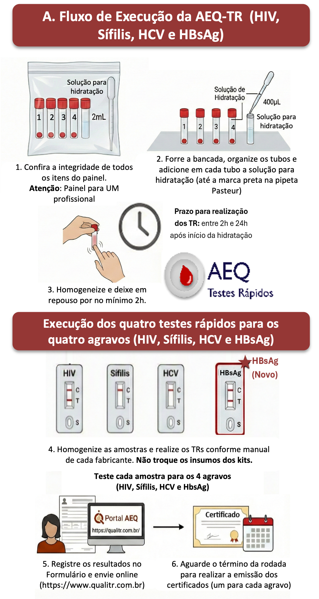
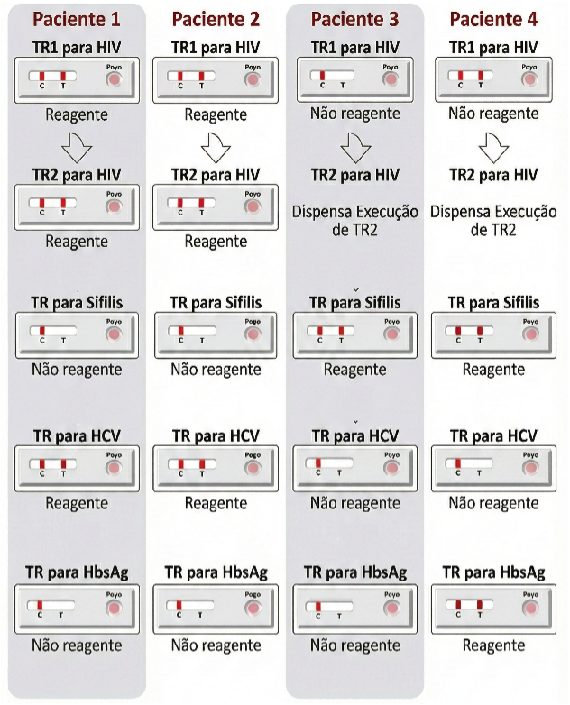

Manual de Instruções para Execução da Avaliação Externa da Qualidade dos Testes Rápidos - AEQ-TR
Princípio da AEQ-TR HIV, Sífilis, HCV e HBsAg:
A AEQ-TR avalia a execução dos testes rápidos (TR) pelos profissionais. A cada rodada, as instituições cadastradas
recebem painéis com 4 amostras biológicas secas para serem hidratadas e testadas como se fossem amostras de sangue total
de 4 pacientes da sua rotina. Após a hidratação, cada amostra deve ser testada com os kits de TR para HIV (TR1 e
TR2, quando for o caso), Sífilis, HCV e HbsAg disponibilizados pelo Ministério da Saúde (MS).
Público Alvo:
Para cumprir os requisitos da RDC ANVISA 978/2025, todo profissional que executa TR nos serviços que integram a rede
do MS deve participar da AEQ-TR. Os profissionais devem participar continuamente das rodadas práticas e rodadas
teóricas, conforme calendário anual.
Material fornecido no Painel AEQ-TR
ATENÇÃO! O PAINEL MUDOU:
Inclusão de testagem para HBsAg e volume suficiente para apenas
UM profissional realizar os testes rápidos.
- Um manual de instruções para execução da AEQ-TR;
- Um formulário para anotar os resultados a serem inseridos no Portal AEQ (https://qualitr.com.br/);
- Quatro tubos (numerados de 1 a 4) com 20µl de amostra biológica seca
com reatividade para HIV, sífilis, HCV e HBsAg desconhecida pelos participantes;
- Um tubo contendo 2,0mL de solução para hidratação das amostras secas (PBS/Tween 20);
- Uma pipeta Pasteur, para transferir a solução de hidratação para os tubos;
- Um sachê de sílica, para absorver a umidade.
ATENÇÃO!
Ao receber o painel, confira se todos os itens estão presentes.
Caso algum item esteja danificado ou faltando, comunique imediatamente a Equipe AEQ-TR por e-mail.
(
equipeaeq@gmail.com).
Material necessário, mas NÃO fornecido no Painel AEQ-TR:
- Kits de TR para HIV, Sífilis, HCV e HBsAg disponibilizados pelo MS;
- Equipamentos de Proteção Individual (EPI) e papel absorvente (papel toalha, por exemplo);
- Caneta esferográfica e caneta marcadora permanente;
- Cronômetro ou relógio.
Estabilidade das Amostras e Biossegurança:
Estabilidade: Mantenha o painel com as amostras secas entre 2°C e 30°C até a data de validade presente na embalagem plástica (não
utilizar o painel fora do prazo de validade). Em locais nos quais a temperatura exceda 30°C, armazene as amostras secas sob
refrigeração (sala com temperatura controlada).
Após a hidratação, as amostras são estáveis por 24 horas a temperatura entre 2°C a 30°C.
Biossegurança: Trate todas as amostras como infectantes e
descarte-as em recipiente para insumos com risco biológico. Adote as normas universais de biossegurança,
o que inclui o uso de Equipamentos de Proteção Individual (EPIs).
O profissional deve testar INDIVIDUALMENTE as quatro amostras para HIV, Sífilis, HCV e HBsAg.
Procedimento para Hidratação das Amostras
Verifique a imagem ilustrativa A (no verso deste Manual de Instruções) que
mostra o Fluxo de Execução da AEQ-TR para HIV, Sífilis, HCV e HBsAg.
CLIQUE PARA VER A ILUSTRAÇÃO A: Fluxo de Execução da AEQ-TR

- Forre uma superfície lisa e plana com papel absorvente e coloque os tubos (4 amostras e a solução de hidratação) na
posição vertical. Identifique cada tampa com o número correspondente a cada tubo.
CLIQUE PARA VER A FIGURA 1: Identificação dos tubos


- Bata cuidadosamente na bancada, os 4 tubos de amostra (ainda fechados) para garantir que o sedimento vermelho esteja no fundo.
- Aspire a solução de hidratação com a pipeta Pasteur disponibilizada junto com o painel,
até a marca preta e adicione esse volume em cada um dos tubos de amostra.
CLIQUE PARA VER A FIGURA 2: Adição do volume

- Tampe cada um dos tubos e agite suavemente a extremidade inferior com o dedo.
CLIQUE PARA VER A FIGURA 3: Agitação do tubo

Deixe as amostras em repouso na posição vertical à temperatura entre 2°C e 30 °C por, no mínimo, 2h. O sedimento vermelho se dissolverá e dará origem a uma solução colorida após o repouso.
Atenção: o prazo máximo para testar as amostras hidratadas é de 24h contadas a partir do início da hidratação.
- Agite novamente a extremidade inferior dos tubos com o dedo (como na Figura 3) e verifique se ocorreu a dissolução do sedimento.
Anote o aspecto das amostras após a hidratação no Formulário de Resultados.
ATENÇÃO!
Neste momento as amostras estão prontas para a execução dos TR para HIV, Sífilis, HCV e HBsAg.
Procedimento para a Testagem do Painel
- Realize os TR para HIV, sífilis, HCV e HbsAg para cada uma das 4 amostras.
Teste conforme a imagem ilustrativa B (no verso deste Manual de Instruções):
Exemplo da quantidade de Testes Rápidos realizados na rodada AEQ-TR por um profissional.
Observe no manual de instruções de cada fabricante o volume de amostra, tempo de leitura e critérios para interpretação.
Para o HIV, realize o fluxograma de diagnóstico completo (TR1 e, quando aplicável, o TR2), conforme o Manual Técnico de Diagnóstico.
- Anote os resultados no Formulário de Resultados.
Atenção ao HIV: Quando o TR1 tiver resultado "não reagente", deve-se selecionar a opção "dispensa execução de TR2".
Resultados:
CLIQUE PARA VER O EXEMPLO DE RESULTADO

ATENÇÃO!
Dados meramente ilustrativos. Não representam resultados reais da rodada.
- O profissional deve transcrever os dados dos Formulários de Resultados para o Portal AEQ (https://qualitr.com.br/) no seu login "Usuário (CPF)" e "Senha" de forma individual e sigilosa.